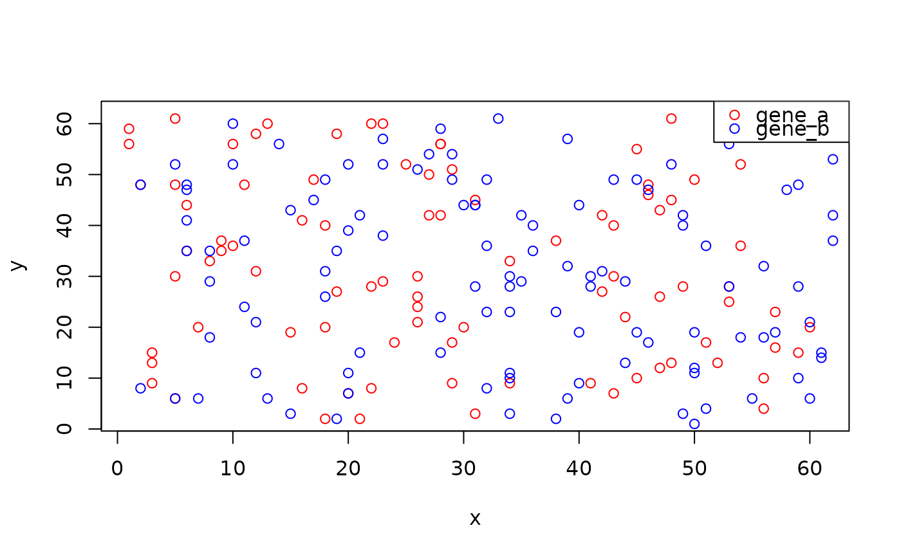

Spatial element centroids
# S4 method for class 'ANY'
centroids(x, ...)
# S4 method for class 'SpatialDataLabel'
centroids(x, as = c("data.frame", "matrix"))
# S4 method for class 'SpatialDataShape'
centroids(x, as = c("data.frame", "matrix", "list"))
# S4 method for class 'SpatialDataPoint'
centroids(x, as = c("data.frame", "list"))A table (data.frame or matrix) of spatial coordinates
(if as="list", split by instance (shapes) or features (points)).
x <- file.path("extdata", "blobs.zarr")
x <- system.file(x, package="SpatialData")
x <- readSpatialData(x, tables=FALSE)
centroids(label(x))
#> x y i
#> 1 33.187831 47.55291 3
#> 2 55.952632 30.38421 4
#> 3 30.415254 25.29661 5
#> 4 17.340000 52.66000 8
#> 5 18.409091 27.54545 10
#> 6 8.131579 28.97368 11
#> 7 22.886719 38.48047 12
#> 8 19.500000 55.70000 13
#> 9 9.500000 19.50000 15
#> 10 39.712121 18.81818 16
centroids(shape(x))
#> x y
#> 1 36.38277 24.63317
#> 2 32.37829 46.41484
#> 3 24.37159 25.55172
#> 4 18.74077 23.57794
#> 5 46.17780 32.36248
head(centroids(point(x)))
#> x y genes
#> 1 6 48 gene_b
#> 2 41 28 gene_b
#> 3 27 54 gene_b
#> 4 6 44 gene_a
#> 5 13 6 gene_b
#> 6 33 61 gene_b
xy <- centroids(point(x), "list")
plot(xy$gene_a, col=a <- "red")
points(xy$gene_b, col=b <- "blue")
legend("topright", legend=names(xy), col=c(a, b), pch=21)
